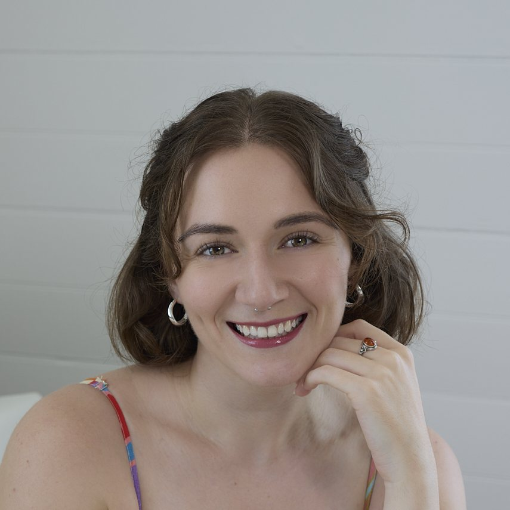

ADHD assessment online: what telehealth can and cannot do.
Most of an ADHD assessment is a conversation, which works by phone or video. Both GPs in the ADHDme network see people remotely, and its Brisbane and online psychologists offer telehealth, so you can start from anywhere in Australia. A few parts still need to be done in person.
Who works by phone or telehealth
Everyone listed has declared remote appointments. The telehealth marker on each profile comes from what the clinician declares.





What can be done remotely
The developmental history, the rating scales, the check for other causes and the diagnosis itself can all be done by phone or video. So can therapy, which the network’s Brisbane and online psychologists offer by telehealth.
Booking works the same way as in person. The button on each profile opens the practice’s booking page or enquiry form in a new tab. No referral needed, and you don’t need an account. A GP assessment through the network costs $299 for the first consultation and $199 for the follow-up, $498 in total. The two consultations cover the assessment and the diagnosis. Neither attracts a Medicare rebate. Fees are set and charged by the practice. ADHDme takes no commission.
What needs an in-person visit
A physical baseline before medication: heart rate, blood pressure, weight, and anything the history raises. Some practices ask your local GP to take these and send the results. Others ask you to come in once. Check how the practice handles this before you book.
Medication. Stimulant prescribing is regulated by each state, and prescribers follow the rules of the state they practise in. Queensland changed its rules on 1 December 2025. A specialist GP (one with FRACGP or FACRRM fellowship) can now diagnose ADHD in an adult and start, adjust and continue stimulant medication without a psychiatrist signing off first. NSW is changing its rules in stages. Since September 2025, GPs who have completed the state’s training can continue stimulant prescriptions that a psychiatrist started, for patients who are stable on treatment. A second stage, rolling out through 2026, lets trained GPs assess, diagnose and start medication themselves. The practice will tell you what can be started remotely.
Therapy by telehealth
All the Brisbane psychologists offer telehealth, and Paula Garrido’s clinic is online only. Each psychologist sets their own fee, shown on their profile. With a Mental Health Treatment Plan from a GP, Medicare pays part of the fee for up to 10 sessions a year. At current rates the rebate is $101.55 a session for a registered psychologist and $149.05 for a clinical psychologist.
Any GP can write a Mental Health Treatment Plan, including your own, and it works the same way for a telehealth psychologist.
Choosing a clinician you won’t meet in person
Each profile is the clinician’s own account of how they work, who they see, what they focus on and what they charge. On The Network page, the chips under each name let you filter quickly: neuroaffirming, trauma-informed, assessment, children, adults.
Common questions
Can ADHD be diagnosed online in Australia?
Yes. The history, rating scales and diagnostic conversation can be done by phone or video. The physical baseline before medication is usually done in person, by the practice or your local GP.
Can I get ADHD medication through telehealth?
It depends on the state the prescriber practises in, and sometimes the state you live in. Queensland lets specialist GPs start adult stimulant medication, NSW is phasing it in through 2026, and the practice will tell you what applies.
Is telehealth psychology covered by Medicare?
Yes. Under a Mental Health Treatment Plan, telehealth sessions get the same rebate as in-person sessions, for up to 10 sessions a year.
Do I need a referral for a telehealth ADHD assessment?
No referral needed. You book or enquire directly with each clinician.
Ready to find your clinician?
Read the profiles, then book or enquire with the practice.
No account or sign-up needed.